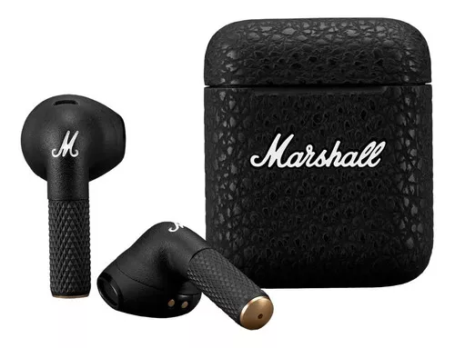

| 
|
Minor III
- Auriculares inalámbricos True Wireless que ofrecen un sonido rico y detallado.
- Controladores dinámicos de 12 mm que brindan una respuesta de frecuencia de 20 Hz a 20 kHz.
- Sonido personalizado de Marshall que realza los graves, medios y agudos.
- Diseño compacto y ligero para un ajuste cómodo y seguro.
- Clasificación IPX4 de resistencia al agua y al sudor.
- Conectividad Bluetooth 5.2 para una conexión inalámbrica estable y de largo alcance.
- Micrófono integrado para llamadas manos libres.
- Carga rápida de 15 minutos para 1,5 horas de reproducción.
|